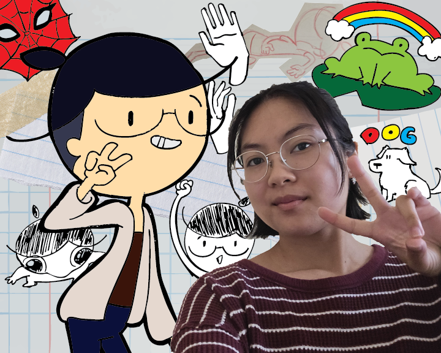

I chose to explore the freedom that digital identities allow for creative individuals. Rather than being confined to realism, digital identities allow for as much creative freedom as the user is able to produce. I chose to contrast my own digital persona with a real picture of myself, to show how an individual may choose to exaggerate or simplify themselves to something that the individual chooses to identify with. I used both photoshop to edit and crop a picture of myself and illustrator to digitize my sketches and compile everything into one image. I used a combination or traditional and digital art skill, showing how technology has in some ways streamlined the art-making process. Technology is a powerful tool and is able to help artists produce clean-looking illustrations with relative ease.
